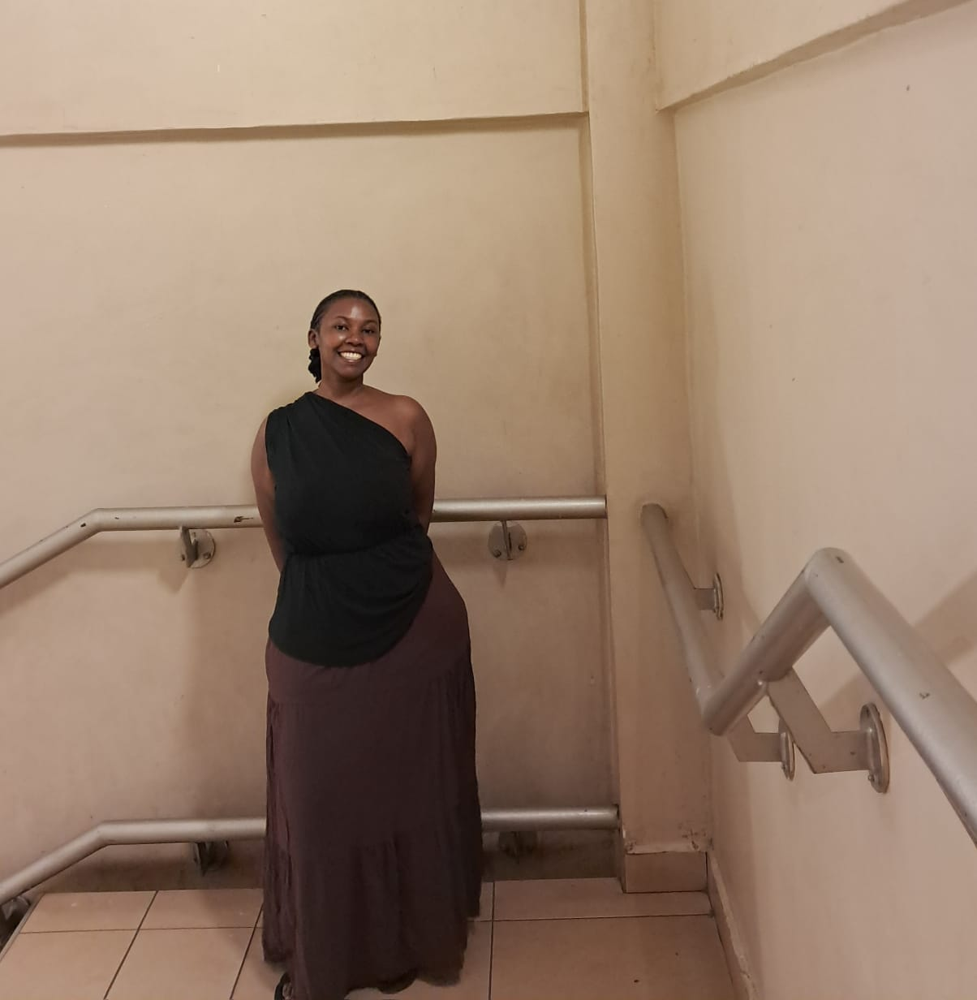

About Me
Hoziyana Rachel is a Data Scientist, Data Analyst, Ghostwriter, and Virtual Assistant who is constantly building herself, learning every day, and finding purpose at the intersection of data intelligence and effective support. Her work bridges analytical insight with practical execution—whether she is building interactive dashboards, analyzing diagnostic and financial trends, identifying patterns, or developing predictive models that support better decision-making.
Beyond her technical work, Rachel is a proud Rotarian and a Transformative Leader committed to service and community impact. As the Co-Founder & Partnership Coordinator of Rwanda Rice Revival, she actively works to foster meaningful collaborations and drive sustainable growth. She also lends her precision and attention to detail to work as a Transcriptionist and ghostwriter, crafting clear, compelling narratives behind the scenes.
This blog is for people who are still becoming. For those building careers while figuring out life. For the dreamers who sometimes doubt themselves. For the women trying to become more without losing who they already are. For the ones who love deeply, dream loudly, start again, and keep going even when the road looks uncertain.